Mandroids - - KNW 2300 mini design challenge
Posted on August 28, 2016
Our team, Mandroids, consists of Clay Harper, David Newton, Enyi Asonye, Jarrod Ahn, Nick Woodard, Roby Liebbe, and Sean Doyle.
For this project, the challenge was to create a device that could throw a ping pong ball at a target. Both the balls and the target were covered in velcro. Points were awarded based on distance and accuracy.
We discussed a few different means of throwing the ping pong balls, but quickly decided upon a crossbow design with the idea that it would be the most accurate. Considering the materials we have available, we recognized that the plywood board is not flexible enough for a true crossbow design, and instead the force on the ball will be generated by rubber bands.
For this project, the challenge was to create a device that could throw a ping pong ball at a target. Both the balls and the target were covered in velcro. Points were awarded based on distance and accuracy.
We discussed a few different means of throwing the ping pong balls, but quickly decided upon a crossbow design with the idea that it would be the most accurate. Considering the materials we have available, we recognized that the plywood board is not flexible enough for a true crossbow design, and instead the force on the ball will be generated by rubber bands.
3D Printed Parts
The primary mechanic of our design is that the ball will be shot from a 3D-printed pipe. The pipe will ensure that the ball moves in a straight line and stays accurate. Rubber bands will run through a cut in the center of the pipe to exert maximum force on the ball.
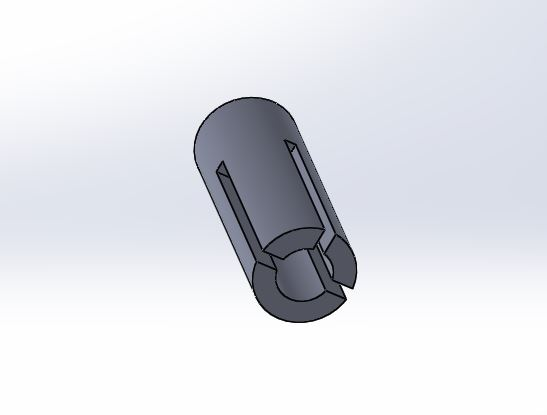
The Solidworks model of our 3D printed pipe. The notches in the sides are for anchor points for the rubber bands, and the notch on the top is for stability
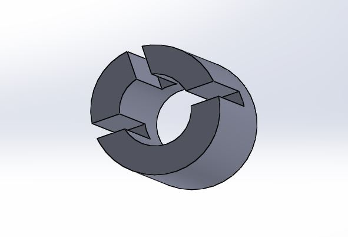
The Solidworks model of our 3D printed pipe. The notches in the sides are for anchor points for the rubber bands, and the notch on the top is for stability
Running through the pipe there will be another 3D printed piece that the rubber bands will actually be attached to, which will slide along to propel the ball.
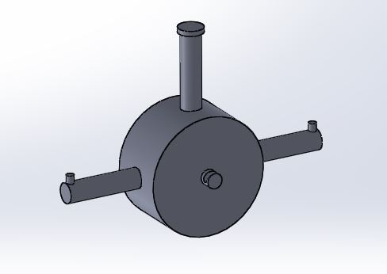
The sliding plug. Rubber bands will be attached to the extensions on the sides
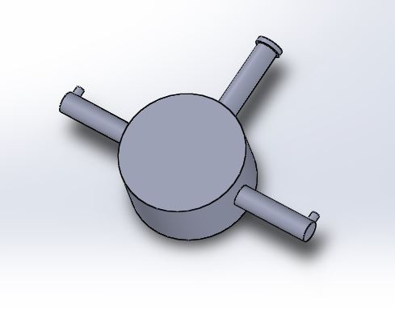
The sliding plug. Rubber bands will be attached to the extensions on the sides
In the center of the plug there is a small hook, which will connect to a paper clip for the purpose of holding back the ball until the mechanism is fired.
Firing Mechanism
By far the most difficult component to design is the firing mechanism. The requirement that the device must be triggered by another ping pong ball poses a problem, as any piece capable of holding back the intense force of the rubber bands will most likely not be able to be released with only the weight of a ping pong ball.
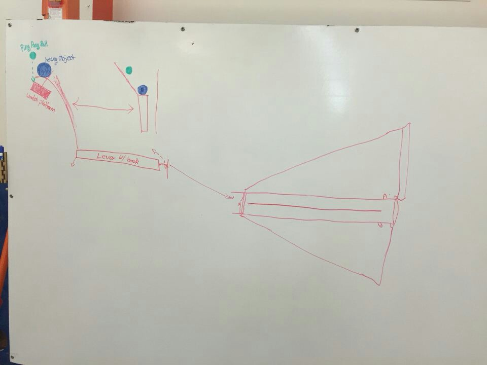
Our initial ideas for the trigger mechanism
It seemed clear to us that the dropping of the ping pong ball must trigger a heavier object to fall, and that heavier object will trigger the actual launch.
We came up with two different ideas for a trigger, both following the same principle of using a ping pong ball to trigger a heavier object. If the first design fails, we have a second to try.
We came up with two different ideas for a trigger, both following the same principle of using a ping pong ball to trigger a heavier object. If the first design fails, we have a second to try.
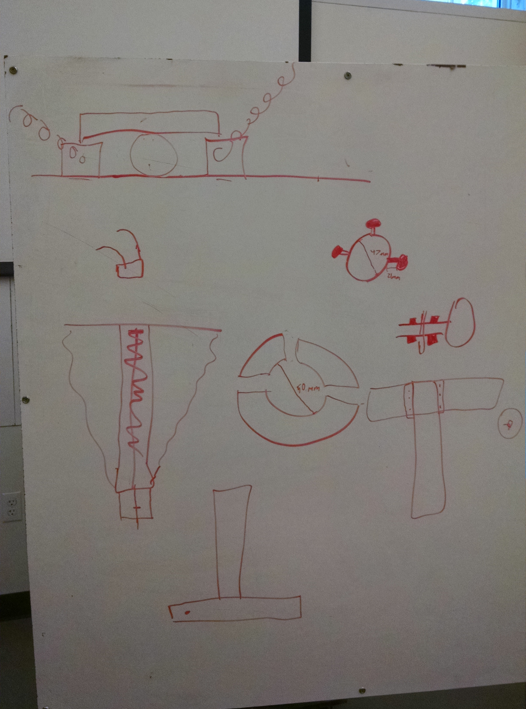
Designs and measurements for the body of the device
Prototyping
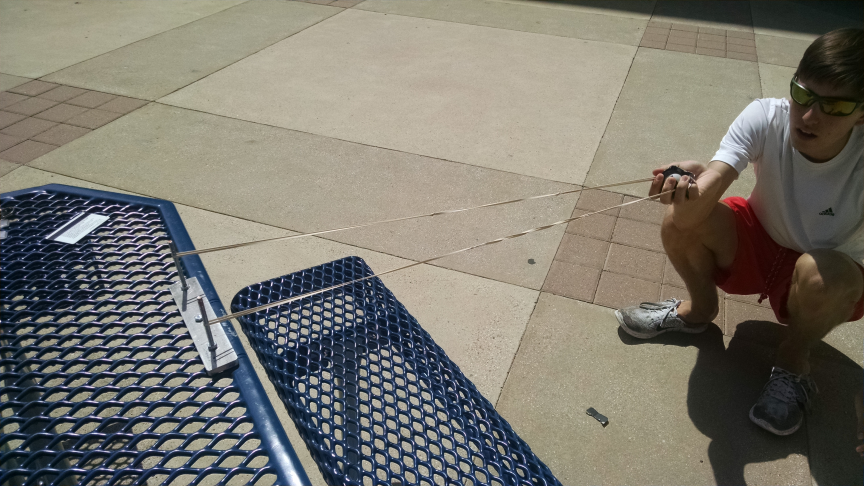
A prototype slingshot made of scrap metal
In order to ensure that the rubber bands we used would have enough force, we built a makeshift slingshot to see how far the bands would send the ball. Our specifications were based on calculations we did that modeled the rubber bands. Assuming rubber bands conform to Hooke’s law for springs, the behavior of the rubber bands can be modeled. We measured the spring constants of multiple kinds of rubber bands using a force gauge and compiled a spreadsheet to simulate our design. Happy with the results, we continued building the crossbow.
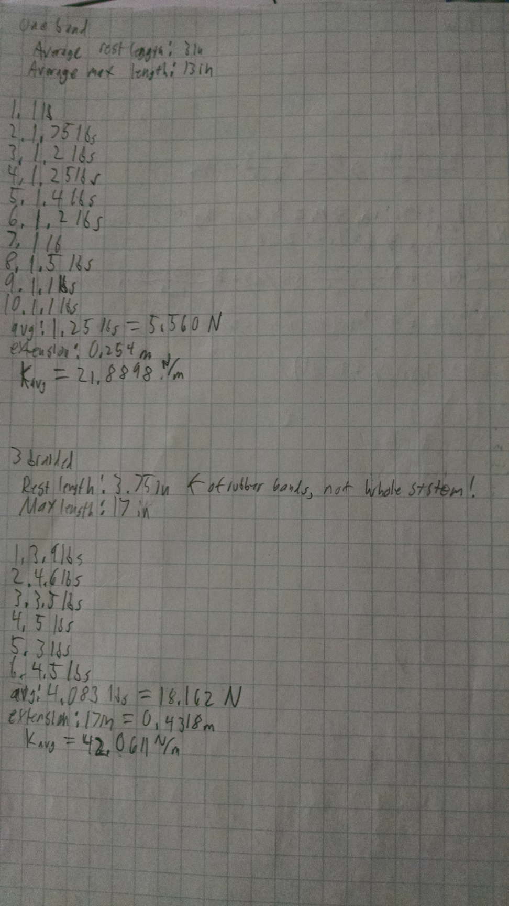
Our experimental results and calculations
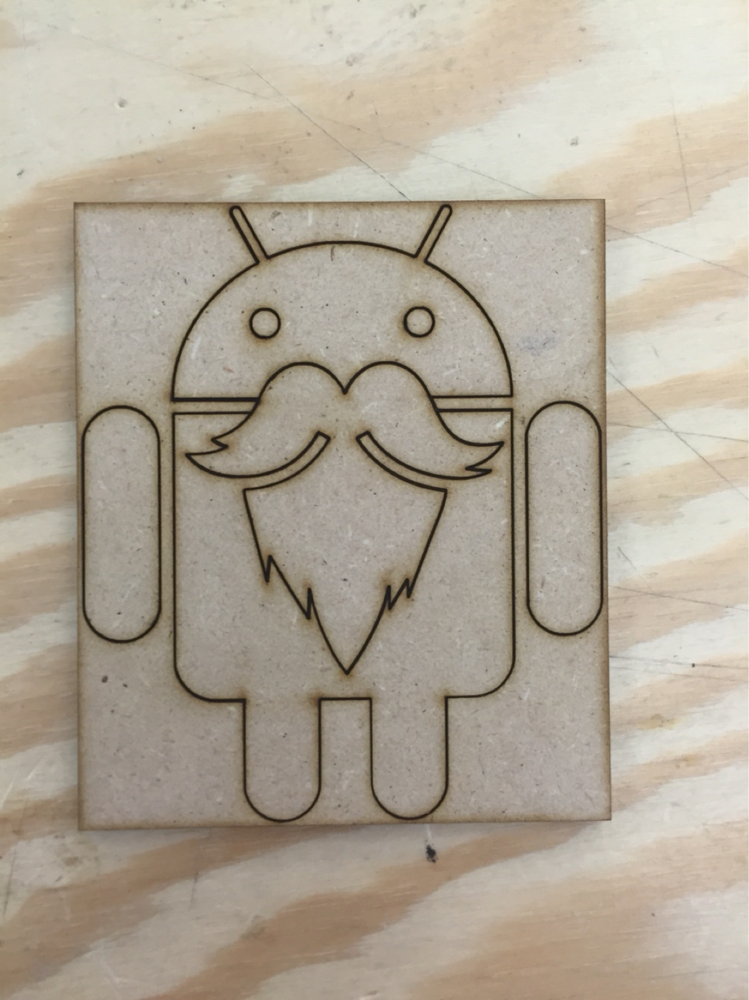
Laser engraved Mandroids mascot
Most of today has been dedicated to becoming certified on the equipment so that the final build process will be smoother. At the time of writing this, the first segment of the main pipe is printing, though it is taking longer than we originally anticipated.
Agenda
- 3D print the plug and pipe
- Use the pieces to build a prototype out of scraps. Hopefully, we can finish it by Monday night
- Measure the distance that the prototype can shoot
- Either rework the design if there is a failure or create more exact pieces with the laser cutter for the final build
- Use the pieces to build a prototype out of scraps. Hopefully, we can finish it by Monday night
- Measure the distance that the prototype can shoot
- Either rework the design if there is a failure or create more exact pieces with the laser cutter for the final build
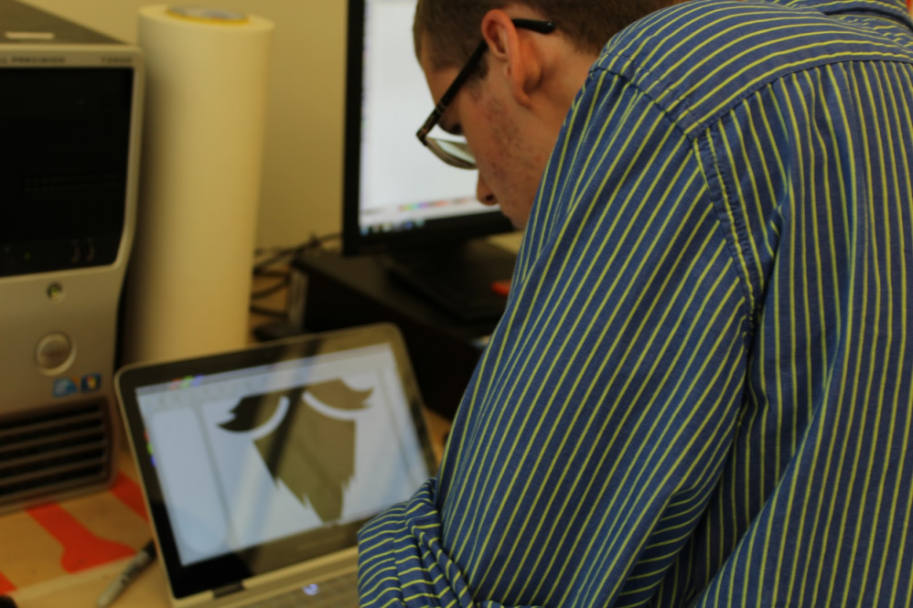
*Action shot*
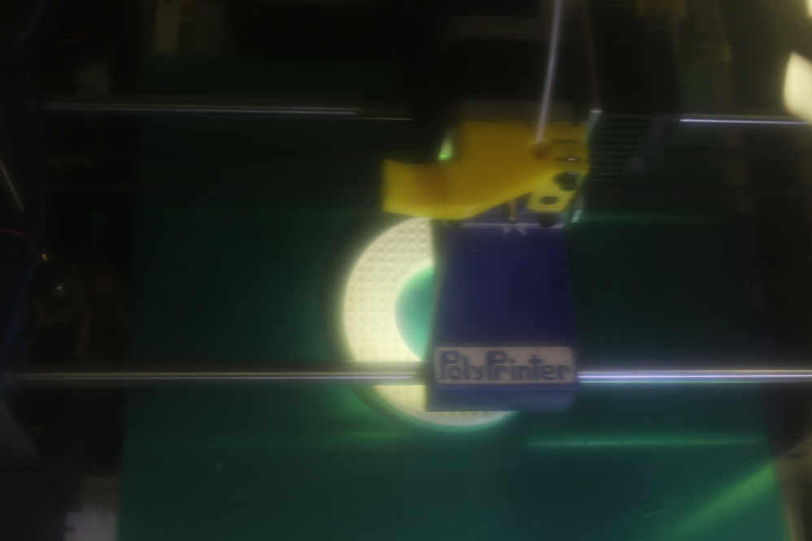
The pipe being 3D printed
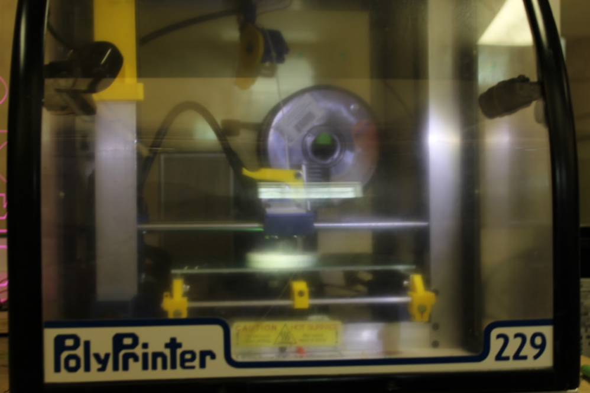
The pipe being 3D printed
Update: September 3, 2016
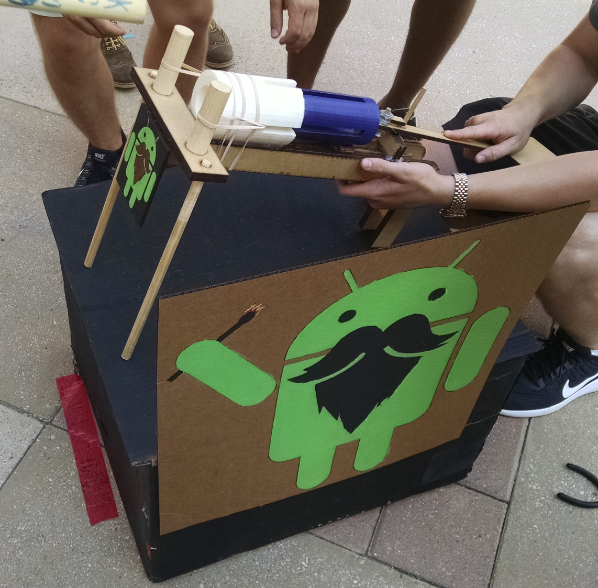
Our completed launcher
We completed the design by laser cutting the body out of MDF and hot gluing everything together. We wanted to use the strongest possible rubber bands in order to throw the ball as far as we could. Unfortunately, the rubber bands we chose seemed to be too strong, and kept breaking parts of our launcher. The arms that stuck off the side of our 3D printed plug worked for a while, but eventually broke. We then printed a new one with thicker arms, and it broke as well. We printed a third one that we reinforced as much as we possibly could, and it broke after only a couple shots. We then took this plug and drilled a hole through it where the arms were, and inserted a 3/8 inch piece of wooden dowel, thinking this would be stronger than the ABS plastic. Again, this worked for a little while, but after we broke three or four pieces of dowel we decided it wasn't a sustainable solution. We eventually used paper clips in place of the dowel, since they were both strong as flexible, and were less likely to break.
The trigger mechanism consists of a lever with a paper clip sticking of the end. The paper clip loops around the hook on the back of the plug, and when the back of the lever is pressed down, the mechanism fires. One of the criteria for this competition was that the trigger must be activated by dropping another ping pong ball on it. Unfortunately, due to the tension of the rubber bands, our trigger required quite a bit more force than this, and we only successfully fired it once in competition.
This website was produced by Sean Patrick Doyle and published in 2016. Anything here may be used freely, if you want, but please give me credit.